I build explainable AI and resilient backend systems.
I’m an Informatics Engineering graduate based in Manado, Indonesia. I use Python and TypeScript to build AI applications and the systems behind them—from document retrieval and model training to real-time APIs and deployment.
Team achievements in AI research and software engineering, from university selections to national and international competitions.
SEP 2026 / NATIONAL
02
place
2nd place — PIDI DIGDAYA x HACKATHON 2026
Our team won second place in Bank Indonesia’s national competition with YUDHA, a platform for Indonesian civil-service and state-owned-enterprise exam preparation.
MY CONTRIBUTION I built the real-time battle backend, matchmaking, match resolution, and study-session APIs.
Placed first in Universitas Sam Ratulangi’s selection for the SATRIA DATA 2024 Big Data Challenge.
02 / PROJECTS
Projects
Six selected projects across AI and backend engineering. Open a project to see the problem, my role, the approach, and the result.
BACKEND ENGINEERING / APR–SEP 2026YUDHA: Exam preparation platformReal-time practice battles and study APIs for Indonesian recruitment exams.View project ↗
SERVER-AUTHORITATIVE CARD BATTLES
Keeping competitive exam practice in sync
YUDHA (Your Ultimate Digital Hiring Arena) helps candidates prepare for Indonesian civil-service (CPNS) and state-owned-enterprise (BUMN) recruitment. I built the backend for its real-time card battles and study sessions.
Problem
Keep matchmaking, battle state, and study progress consistent across concurrent requests and player disconnects.
My role
Backend developer responsible for the NestJS and Socket.IO battle engine, matchmaking, match resolution, and study-session APIs.
Approach
Used Upstash Redis and Lua for first-in, first-out matchmaking, private room codes, and a 30-second reconnection window. Supabase PostgreSQL functions resolve matches and update rank points.
Key decision
Made match resolution idempotent so retries cannot apply the same result twice. Session locks and deterministic analytics keep study progress consistent.
Result
Delivered battle and study APIs, plus Firebase Cloud Messaging notifications for study streaks. The team placed 2nd at PIDI DIGDAYA x HACKATHON 2026.
Project scope
The broader product includes learning analytics and AI interview practice. Learning System V2 and web assessments remain planned capabilities.
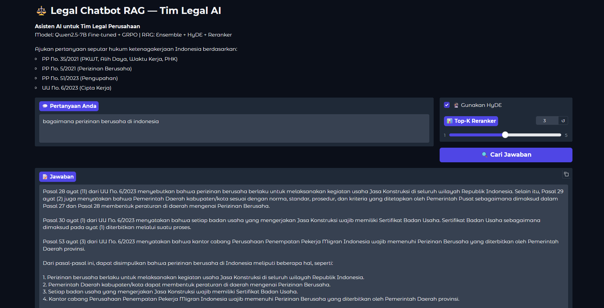
LLM ENGINEERING / JUL 2026Legal AI: Indonesian labor-law assistantFine-tuned Qwen reasoning and hybrid retrieval over 1,900+ pages of labor-law documents.View project ↗
INDONESIAN LABOR LAW RETRIEVAL
Connecting legal questions to relevant source documents
I built a legal-document assistant that combines a fine-tuned Qwen 2.5 7B model with retrieval over more than 1,900 pages of Indonesian labor-law documents.
Problem
Retrieve relevant passages from a large legal-document collection and use them to support structured answers.
My role
Built the model-training pipeline, document retrieval system, and Gradio interface.
Approach
Fine-tuned Qwen 2.5 7B with QLoRA and Group Relative Policy Optimization (GRPO), using custom rewards for structured reasoning.
Key decision
Combined keyword search (BM25) and vector search (ChromaDB) with Reciprocal Rank Fusion. HyDE query expansion and parent-child chunks add retrieval context.
Retrieval checks
Added FlashRank reranking, confidence thresholds, and a DuckDuckGo search fallback.
Result
Published merged 16-bit model artifacts on Hugging Face Hub and delivered an interactive Gradio application.
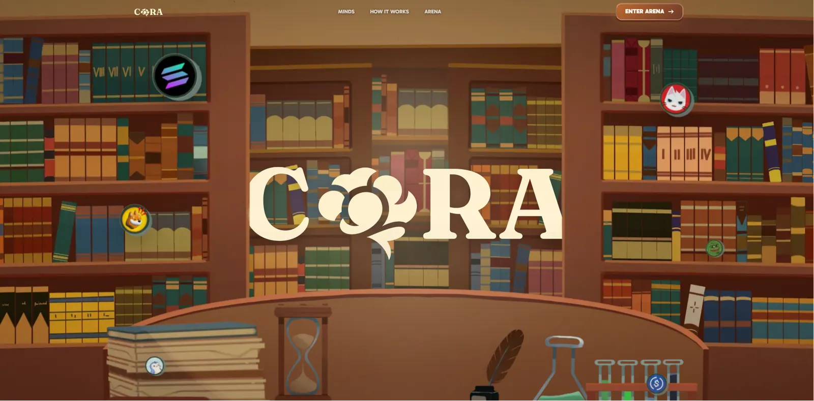
REAL-TIME SYSTEMS / APR–MAY 2026CORA: Multiplayer game backendReal-time match state and deterministic settlement for a multiplayer Solana game.View project ↗
SYSTEMS & ON-CHAIN STATE
Connecting real-time matches to on-chain settlement
I built CORA’s server-side match loop and settlement verification, keeping game state, deposits, and payouts aligned across concurrent events.
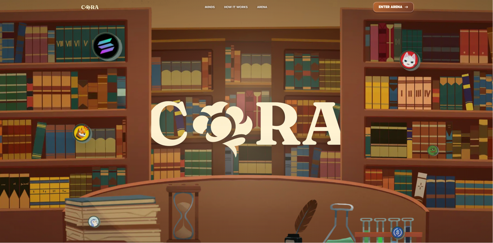
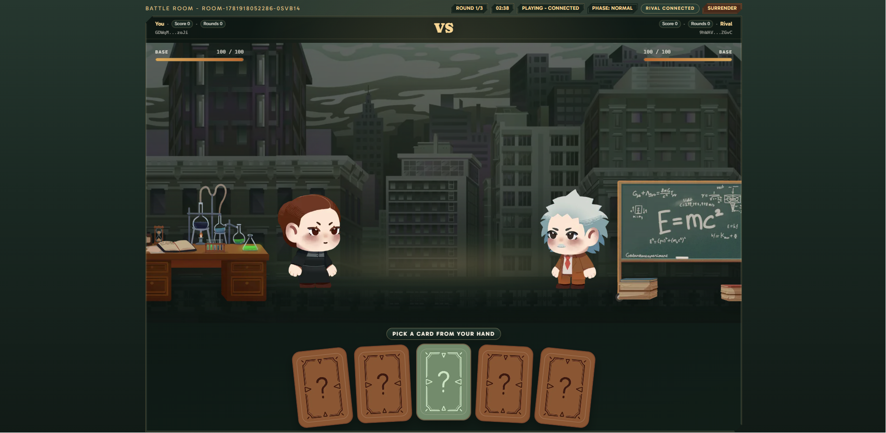
01MatchBun + Hono WebSocket state
02VerifyServer evaluates game payload
03SignDeterministic oracle signature
04SettleNative SOL payout execution
Problem
Keep concurrent multiplayer matches and native SOL wagers consistent from deposit through payout.
My role
Backend developer for the match state machine, settlement oracle, and Solana Actions endpoints.
Approach
Connected Bun and Hono WebSockets to a verification, signature, and payout flow. Added wSOL wrapping and a sequential deposit state machine.
Key decision
Locked transaction parameters at each step so racing match events could not produce different payouts.
On-chain integration
Integrated MagicBlock Ephemeral to mirror gameplay on-chain for verification.
Result
Delivered a real-time match loop with deterministic settlement. Team CORA placed 9th among 482 submissions in the 100xDevs Frontier Hackathon Track.
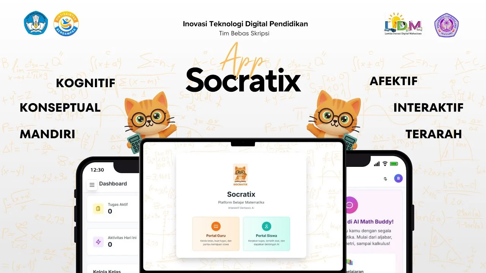
AI ENGINEERING / 2025–2026Socratix: Socratic AI math tutorA tutoring pipeline that routes problems, checks equations, and guides students step by step.View project ↗
MULTI-AGENT SOCRATIC MATH TUTOR
Guiding students through a problem, one step at a time
Socratix combines a Next.js tutoring interface with a NestJS pipeline for problem routing, math validation, guiding questions, and teaching visuals. My contribution focused on the AI routing and planning pipeline.
01 / AGENT 1Route and planRegex fast path with LLM fallback; extract problem type, variables, and known values
02 / VALIDATORValidateMath.js AST substitution checks equations before response generation
03 / AGENT 2GuideBuild a step-by-step Socratic prompt and request the next useful visual
04 / AGENT 3VisualizePlan balance scales, fraction bars, number lines, or coordinate scenes
Problem
Turn varied student questions into structured math problems that a tutoring pipeline can validate and explain.
My role
AI and backend engineering: designed the router and planner pipeline with Groq and NestJS, including input classification and context extraction.
Approach
Combined regex routing with an LLM fallback through the Vercel AI SDK. Zod schemas validate extracted equations, problem types, and parameters.
Key decision
The pipeline checks equations through Math.js before generating guidance. Defensive error handling and prompt-injection mitigations help manage unexpected inputs.
Result
Routing reached approximately 5 ms and correctly classified all 20 examples in the project’s validation matrix. This is a small project evaluation, not a general accuracy benchmark.
Recognition
11th place in the ASEAN AI Hackathon Education Track (March 2026); 1st place at UNSRAT in the LIDM Digital Education Technology Innovation division (September 2025).
MULTIMODAL TRANSFORMERS / JUL–AUG 2025Fish freshness: Multimodal classifierImage and gas-sensor fusion for fish-freshness classification, with 84.3% macro F1.View project ↗
VISION + NUMERICAL FUSION
Combining images and sensor readings to classify freshness
For our GEMASTIK XVIII research entry, I built a model that combines fish images with electronic-nose sensor readings and uses attention analysis to inspect its predictions.
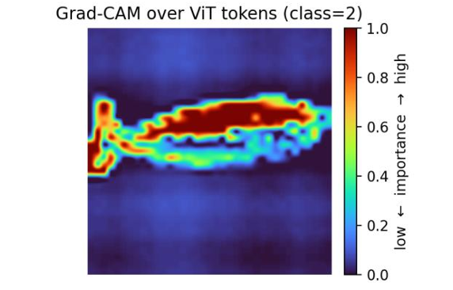
FUSION-01
Grad-CAM evidence over vision tokens used to inspect the model’s spatial focus.
Problem
Combine visual and gas-sensor signals while preserving useful information from each modality.
My role
Designed the fusion architecture and contrastive-learning pipeline, handled class imbalance, and analyzed model attention.
Approach
Aligned DaFiF images and sensor streams by timestamp, filtered anomalies, and combined a DINOv2 vision transformer with an MLP sensor encoder.
Key decision
Aligned the modalities with a CLIP-style contrastive loss, then used bidirectional cross-attention to fuse them. Focal Tversky Loss addressed class imbalance.
Result
The project evaluation recorded 85.4% accuracy, 84.3% macro F1, and 92.7% peak F1 for the “Marginal” freshness class.
Model interpretation
Used Grad-CAM visualizations to inspect the image regions influencing predictions.
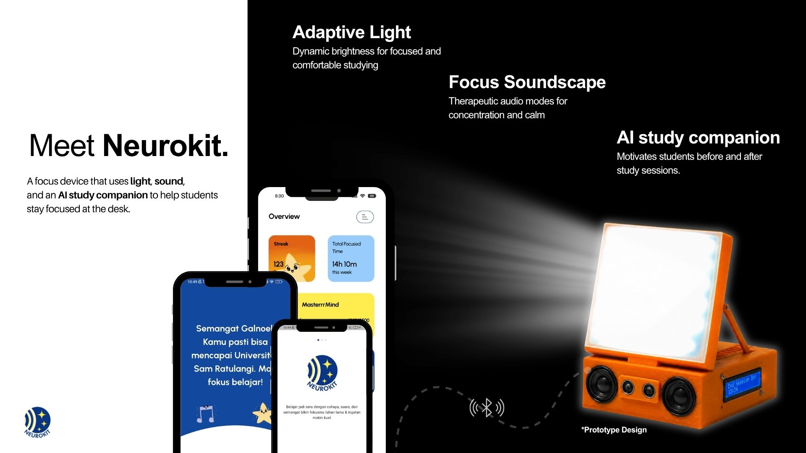
HARDWARE & AI / JUL–NOV 2025NEUROKIT: Connected study toolkitAn ESP32 light-and-audio prototype with Flutter controls and personalized spoken affirmations.View project ↗
3RD PLACE / PIMNAS 38 PRESENTATION CATEGORY
Taking a connected study device from prototype to evaluation
I led NEUROKIT, a research prototype combining adaptive lighting, audio, and a Bluetooth-connected Flutter app. OpenRouter and Prosa TTS generate personalized spoken affirmations.
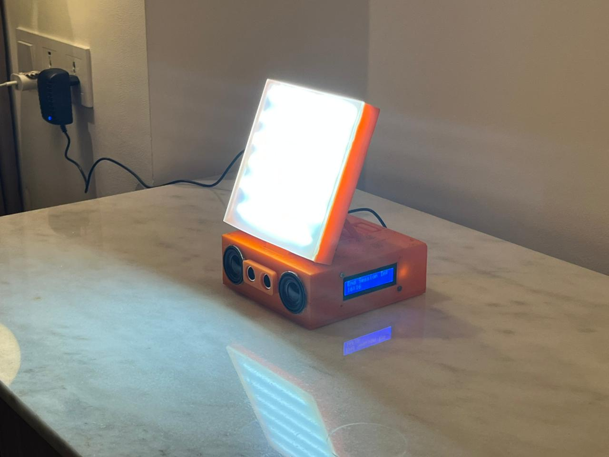
HW-01
15 × 14.5 × 20 cm enclosure integrating PWM-controlled light, audio, sensing, and display.
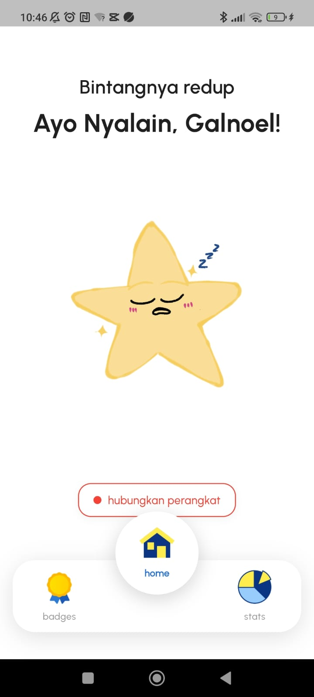
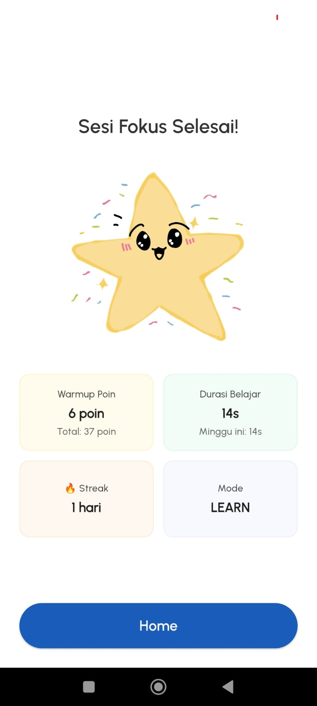
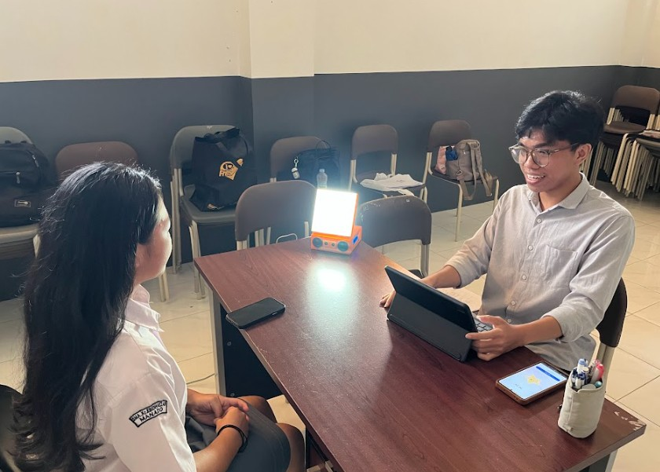
WMS-11.35
Project trials reported an 11.35% improvement in attention and memory measures using the Wechsler Memory Scale.
Problem
Coordinate adaptive lighting, audio, and mobile controls in a single study-support prototype.
My role
Led development across enclosure design, electronics, Flutter, AI integration, prototype testing, and the competition presentation.
Approach
Connected an ESP32 device to a Flutter app over Bluetooth, with study sessions, audio controls, and generated spoken affirmations.
Key decision
Used an HC-SR04 distance sensor and PWM-controlled MOSFET circuitry to adjust lighting across user distances of 30–70 cm.
Result
Prototype tests maintained 500–600 lux, averaging 536 lux. Project trials reported an 11.35% improvement in attention and memory measures using the Wechsler Memory Scale.
Recognition
3rd place (Bronze Medal) in the PIMNAS 38 PKM-KC presentation category.
02B / MORE PROJECTS
More projects
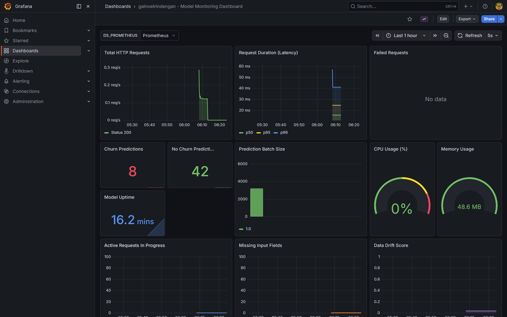
MLOPS / JUN 2026MLOps: Model delivery and monitoringAutomated model releases with dashboards for request volume, errors, and latency.View project ↗
END-TO-END MLOPS
Making model releases repeatable and observable
I built a pipeline that connects model experiments to tested container releases, inference monitoring, and service alerts.
Problem
Make model releases repeatable and detect changes in serving performance after deployment.
My role
Implemented release automation, a Prometheus exporter, Grafana dashboards, and alert rules.
Approach
Connected MLflow, Docker, and GitHub Actions to run unit tests, version model artifacts, and publish images to Docker Hub.
Key decision
Track inference throughput, error rates, and p95 latency so the dashboards show service behavior alongside model releases.
Result
Delivered an automated release pipeline with serving dashboards and notifications for latency spikes and service degradation.
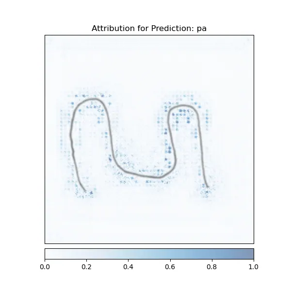
COMPUTER VISION / OCT 2025Javanese script: Handwriting classifierA 20-class handwriting model built during a five-hour competition challenge.View project ↗
20-CLASS HANDWRITING RECOGNITION
Recognizing handwritten Javanese script under time constraints
During the five-hour GEMASTIK XVIII final challenge, I built a classification pipeline for 20 handwritten Javanese script classes using Co-Scale Conv-Attentional Transformers (CoaT).
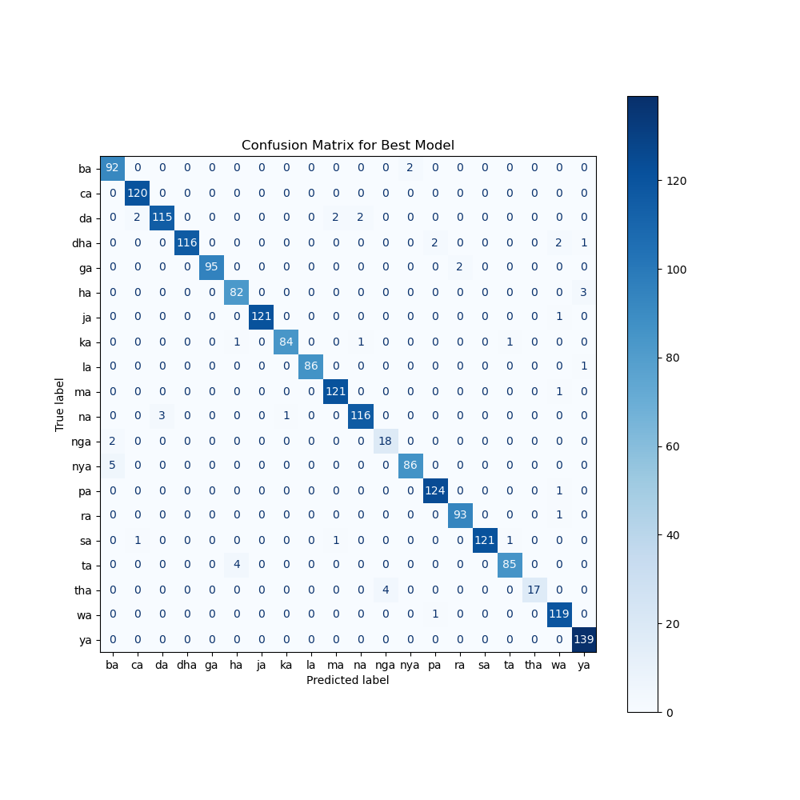
COAT-20
Confusion matrix showing predictions across 20 handwritten Javanese script categories.
XAI-02
Interpretation output used to inspect structural feature extraction after preprocessing.
Problem
Classify 20 handwritten script categories in a time-limited challenge with imbalanced training data.
My role
Handled image preprocessing, class weighting, transformer evaluation, and model interpretation.
Approach
Compared CoaT, Swin, and EfficientNet. Trained with frozen patch embeddings followed by progressive fine-tuning using AdamW and Kornia Focal Loss.
Key decision
Used macro F1 to evaluate performance across classes, and Captum Integrated Gradients to inspect stroke-level attribution and possible shortcut learning.
Result
Achieved a 96.7% test macro F1 across the 20 classes in the final competition evaluation.
GENERATIVE AI / JUN 2026Diffusion: Image generation and editingA Streamlit workspace for image generation, inpainting, and canvas expansion.View project ↗
GENERATION, INPAINTING, AND OUTPAINTING
Bringing image generation and editing into one workspace
I built a Streamlit application around Stable Diffusion 1.5 for image generation, masked editing, and outpainting.
Problem
Give users control over both image generation and targeted edits in a single interface.
My role
Implemented the diffusion pipeline, editing workflows, and Streamlit application.
Approach
Exposed seeds, negative prompts, and sampling settings, with canvas masks for inpainting and image expansion.
Key decision
Used deterministic seeds for repeatable generation and blended mask boundaries to connect edited regions.
Result
Delivered an interactive application for generation, inpainting, and outpainting.
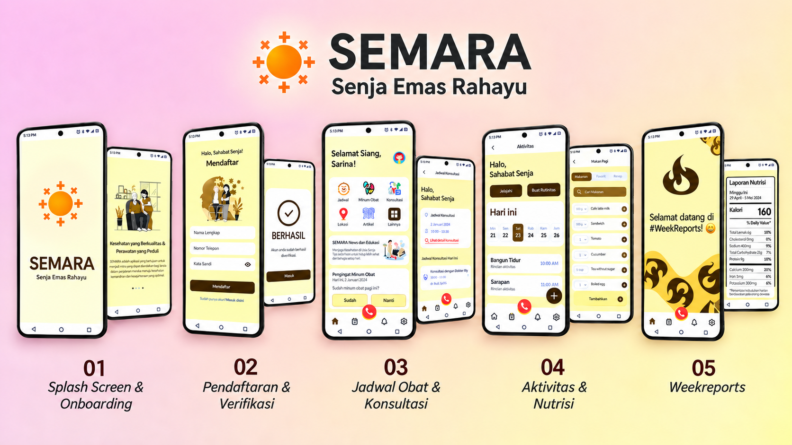
BACKEND ENGINEERING / 2024SEMARA: Daily-care mobile appA mobile app that brings routines, medication reminders, and nutrition logs together for older adults.View project ↗
1ST PLACE / GEMASTIK XVII SOFTWARE DEVELOPMENT AT UNSRAT
Helping older adults organize everyday care
SEMARA (Senja Emas Rahayu) brings medication reminders, consultation schedules, activities, and nutrition logs into one mobile application. I worked as the backend developer.
Problem
Bring daily routines and personal-care information together for older adults.
My role
Backend developer for the SEMARA mobile application.
Approach
The app connects onboarding and registration with a dashboard for medication reminders, consultation schedules, activity planning, food logs, and weekly reports.
Result
The team placed 1st in Universitas Sam Ratulangi’s selection for the GEMASTIK XVII Software Development division in 2024.
Earlier work and applied studies
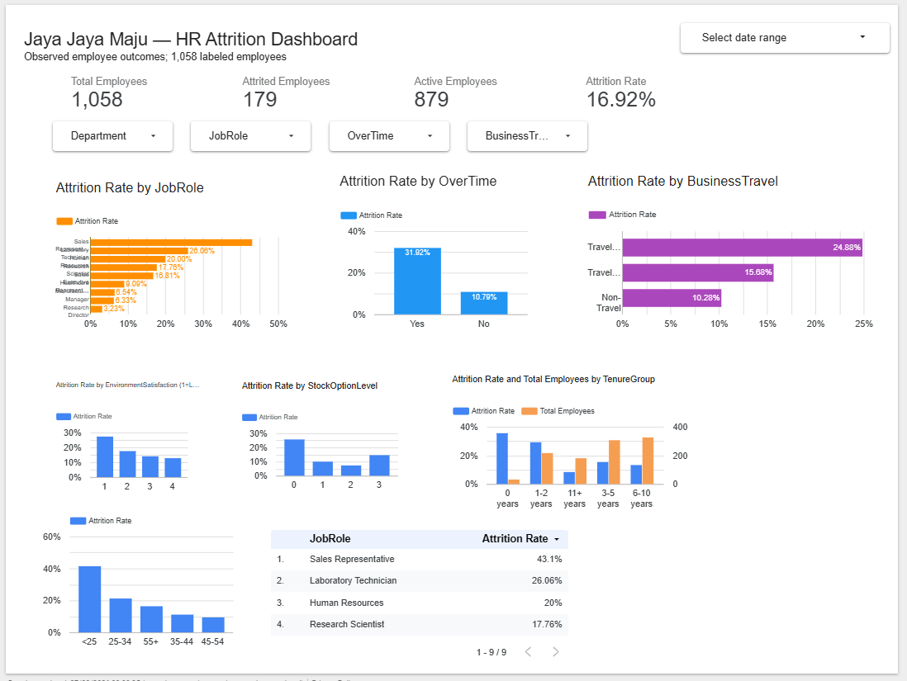
DATA SCIENCE
Employee attrition analysis
I analyzed employee attrition patterns in an HR dashboard and documented model evaluation in a project notebook.
Dashboard and model evaluation
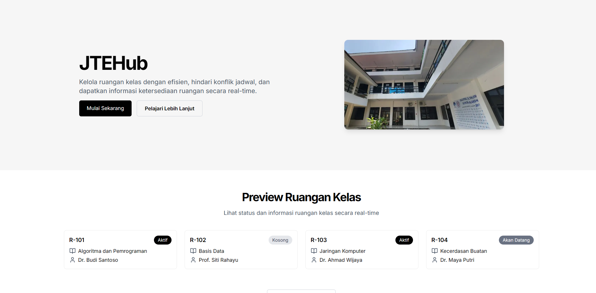
BACKEND ENGINEERING / 2024–2025
JTEHub: Facility booking platform
I built the NestJS scheduling backend, with timezone handling, booking-overlap checks in Supabase PostgreSQL, and role-based access.
I applied Apriori and Eclat to anthropometric data on older adults in Indonesia, producing seven ergonomic rules for facility recommendations at GEMASTIK XVII.
GEMASTIK XVII national finalist
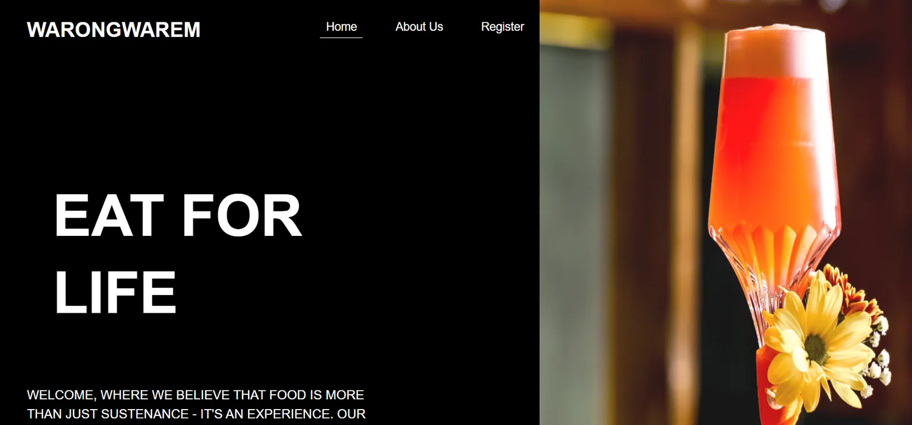
FULL-STACK DEVELOPMENT
Warong Warem: Restaurant website
I built a restaurant website with a relational database, a PHP interface, and form validation.
Academic project
03 / EXPERIENCE
Experience
Professional experience, community leadership, and education in Manado, Indonesia.
JUN–AUG 2025PT. Bank SulutGo
AI Engineering Intern · RAG Systems
Private document retrieval for Bank SulutGo
I built and deployed an on-premises retrieval-augmented generation (RAG) assistant with Ollama, n8n, and Supabase pgvector. Inference and vector storage ran on bank servers so staff could search internal information locally.
I also documented the system with use-case, sequence, and entity-relationship diagrams, including the connection between the Next.js frontend and AI backend.
Constraint
Local-only inference and storage
Supervisor evaluation
95/100 discipline and attitude · 90/100 presentation skills
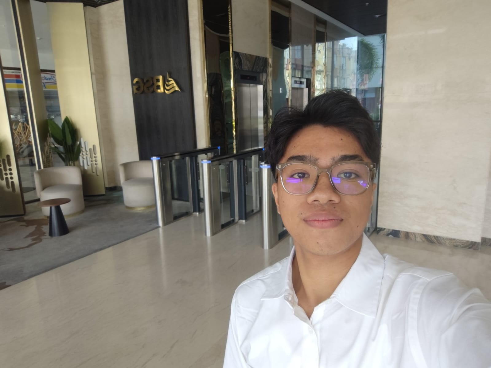
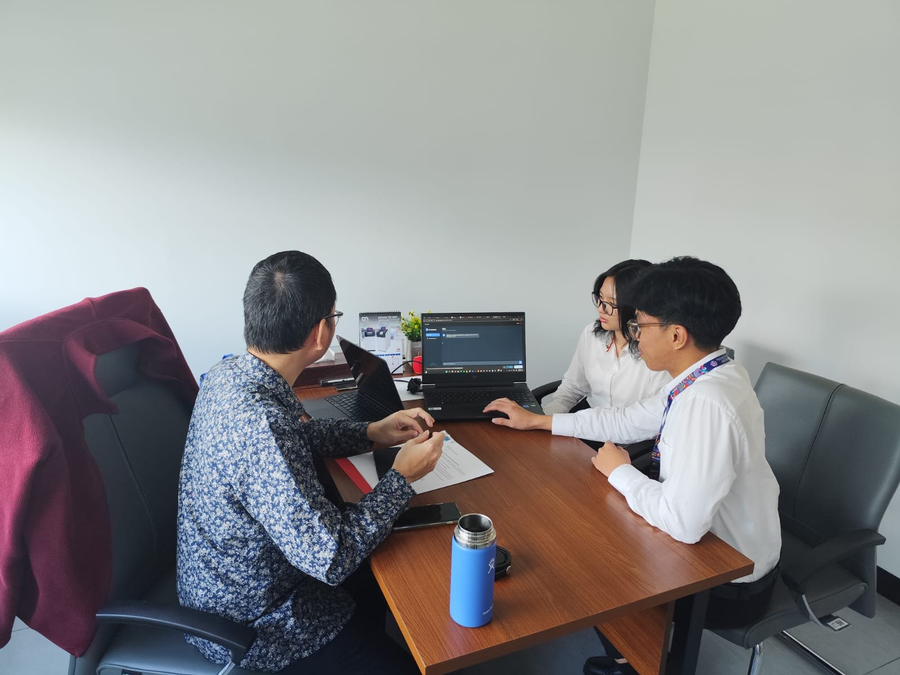
JUL–NOV 2024UNSRAT IT Community
Development Lead · TECHOFEST 2024
Leading a team of 12 to deliver a chatbot
I led a team of 12 contributors to build and deploy a Gemini-powered chatbot for the faculty’s student organization, using Flask and gRPC for the backend integration.
I coordinated web and mobile development and supervised the data team’s collection and analysis workflows.
Delivery team
12 multidisciplinary contributors
Delivery scope
AI backend, web and mobile applications, data pipelines
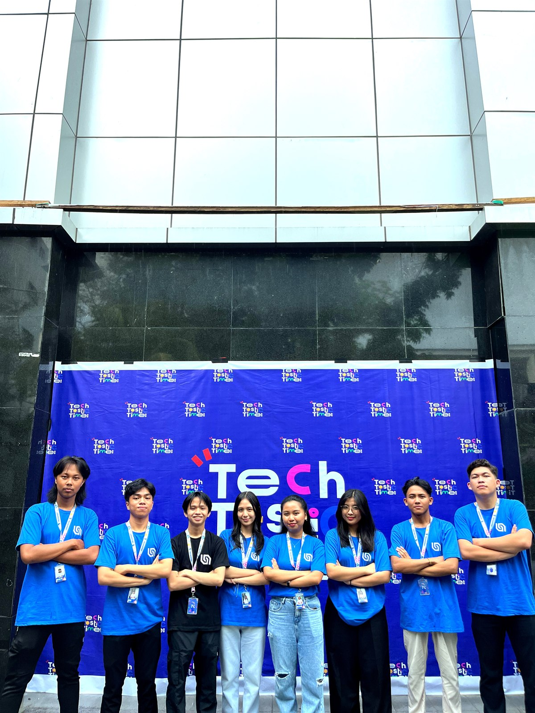
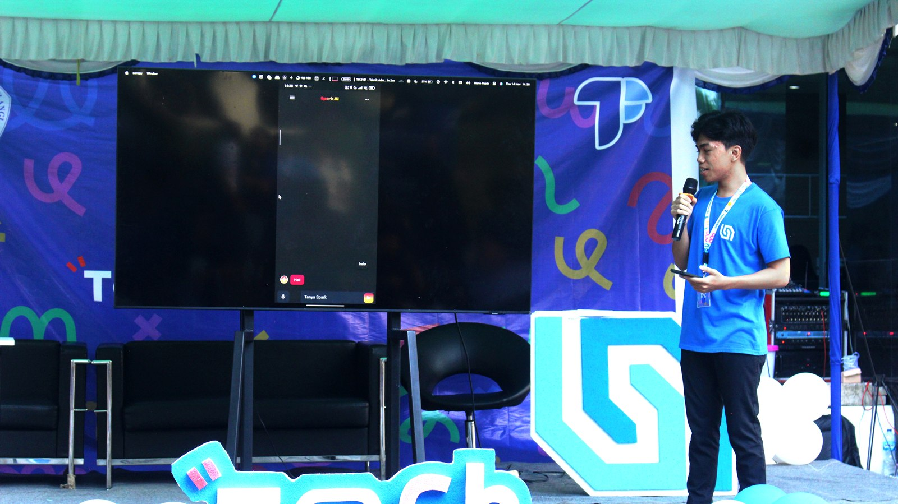
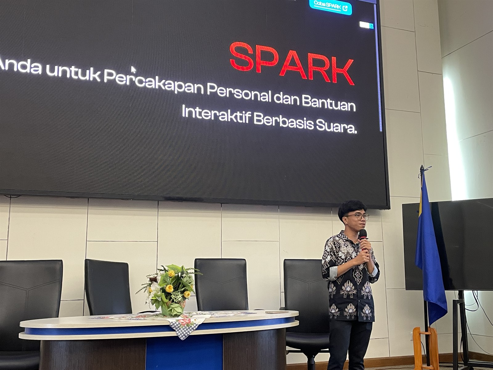
JAN–JUL 2024UNSRAT IT Community
Committee Member · Machine Learning Division
Teaching machine learning through applied projects
I designed a six-month machine learning curriculum and led workshops for more than 20 members. I also mentored a team of five junior members through a chatbot project, from planning to implementation.
Workshop cohort
20+ community members
Project mentoring
5-person junior team
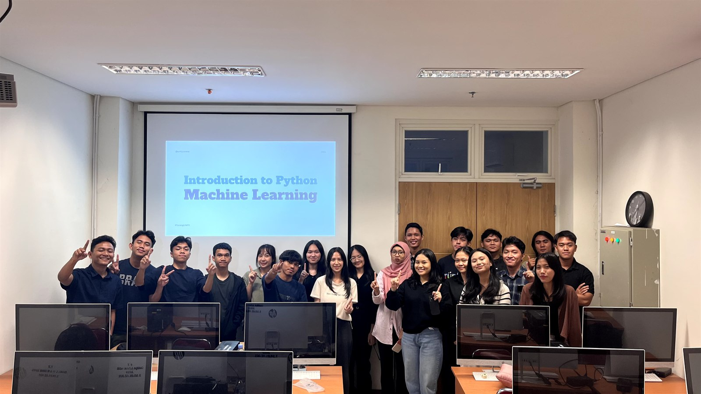
2022–2026Universitas Sam Ratulangi
Education · Manado, Indonesia
Bachelor of Computer Science (S.Kom) in Informatics Engineering
Relevant coursework: artificial intelligence, data structures and algorithms, databases, probability and statistics, and software engineering.
Cumulative GPA
3.93 / 4.00
Study period
2022–2026
04 / CERTIFICATES
Certificates
Completed courses and training in AI, machine learning, data science, and product development, listed by completion date.
Dicoding · 110 hours
Belajar Penerapan Data Science
Applied data science: business dashboards, customer segmentation, credit scoring, PySpark, and cloud workflows.